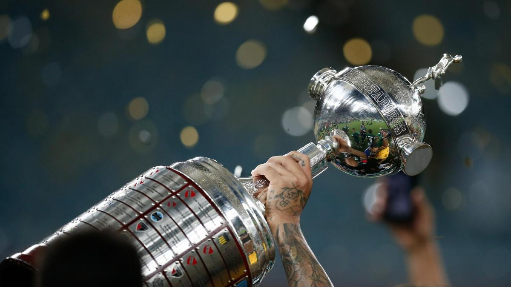

Copa Libertadores
La Copa CONMEBOL Libertadores es el torneo de clubes más importante de América del Sur, organizado por la Confederación Sudamericana de Fútbol (CONMEBOL) desde 1960. Su nombre rinde homenaje a los líderes de la independencia sudamericana, y reúne a los mejores equipos del continente, incluyendo representantes de países como Argentina, Brasil, Uruguay, entre otros. Se disputa anualmente y su campeón gana el derecho a jugar la Recopa Sudamericana y el Mundial de Clubes. Es considerada la equivalente americana de la UEFA Champions League, con una rica historia de pasión, rivalidades y grandes hazañas futbolísticas

Máximos ganadores de la Copa Libertadores
- Independiente (7)
- Boca Juniors (6)
- Peñarol (5)
- River Plate (4)
- Estudiantes (4)
- Olimpia (3)
- Nacional (3)
- Sao Paulo (3)
- Palmeiras (3)
- Santos (3)
- Gremio (3)
- Flamengo (3)
- Cruzeiro (2)
- Internacional (2)
- Atlético Nacional (2)
- Colo Colo (1)
- Atlético Mineiro (1)
- Fluminense (1)
- Racing Club (1)
- Argentinos Juniors (1)
- Vélez Sarsfield (1)
- Vasco da Gama (1)
- Once Caldas (1)
- Liga de Quito (1)
- Corinthians (1)
- San Lorenzo (1)
- Botafogo (1)
Bien, ahora ya sabes algo de la Copa Libertadores. ¿Te gustaría saber más de otras competiciones?